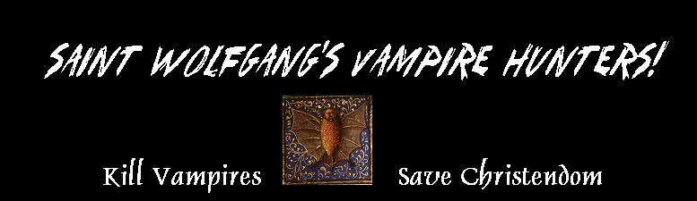
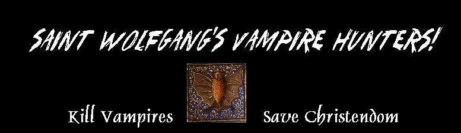
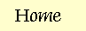

Version May 2008
of Wolfgang Rules is available for download in both Word and PDF format
below.
|
 |
|  |
Rules Version May 2008
of Wolfgang Rules is available for download in both Word and PDF format
below.
|